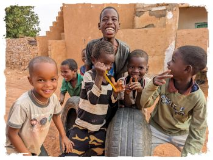

モーリタニア

| Facebookページへは各 |  |
から飛べます |
【モロッコ】カタールで飛行機を乗り継ぎ、26年前初めての海外一人旅で訪れた思い出の地モロッコに立ち寄っています。 これから世界に三つしかないイスラム共和国の一つ、西アフリカのモーリタニアへ向かうつもりだったのですが…
水井 彰さんの投稿 2023年12月29日金曜日
【モーリタニア1】首の皮一枚繋がって完徹状態でモーリタニアへやってきました。 首都でゆっくり疲れを癒したいところですがそんな余裕はなく、なんとかして今日中に500km北に離れたまちヌアジブへ行きたいものの、「バスで行けるらしい」ということしかわかりません。
水井 彰さんの投稿 2023年12月30日土曜日
【モーリタニア2】内陸部で掘り出された鉄鉱石をヌアジブ港から積み出すための一編成3kmにも及ぶ世界最長の貨物列車、その名もアイアントレインがモーリタニア-西サハラ国境沿いに走っています。 好事家の垂涎の的ながら世界一過酷とも言われるこの貨車の中で新年を迎えてみたい、そう考えてしまったのが運の尽きでした。
水井 彰さんの投稿 2024年1月1日月曜日
【モーリタニア3】小さく穏やかなまちアタールを散策後、世界遺産なのになぜかバスが運行されていない、砂に埋もれゆくまちシンゲティへ向かうための足を探しに中心部へ向かいました。 行けるか行けないかわからない、行けるとしてもいつ行けるかはわからない。そういう旅には時間の余裕が必要です。
水井 彰さんの投稿 2024年1月2日火曜日
【モーリタニア4】世界遺産の本丸シンゲティ旧市街とその先に広がる広大無辺のサハラ砂漠を満喫できたところでヌアクショットへ戻ります。 アフリカの懐深く入り込み、非日常の極みばかりを体感した一週間でした。物見遊山気分で巡れる旅行先ではないものの、訪れる価値のある国です。
水井 彰さんの投稿 2024年1月5日金曜日